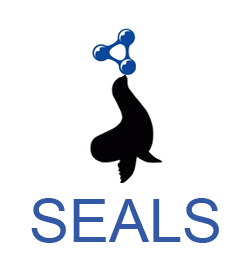

This year we have 7 track participants out of the 19 OAEI 2020 participating systems. The 7 systems (AML, LogMap, LogMapBio, LogMapLite, ATBox, ALOD2Vec and Wiktionary) managed to generate an output for at least one of the track tasks.
We have collected all generated alignments and made them available in a zip-file via the following link. These alignments are the raw results that the following report is based on.
We conducted experiments by executing each system in its standard settings and we calculated precision, recall and f-measure. Systems have been ordered in terms of f-measure. This year, we did consider the whole process pipeline for the calculation of execution times, starting from ontologies upload and environment preparation.
We have run the evaluation in on Windows 10 (64-bit) desktop with an Intel Core i7-4770 CPU @ 3.40GHz x 4 and allocating 16GB of RAM.
1. Results for the FLOPO-PTO matching task
Table shows that all participating systems could achieve this task with an acceptable f-measure. ALOD2Vec and Wiktionary generated a similar huge set of non meaningful mappings with a very low measure. AML generated a large number of mappings (significantly bigger than the size of the reference alignment), those alignments were mostly subsumption ones. In order to evaluate the precision in a more significant manner, we had to calculate an approximation by manually assessing a subset of around 100 mappings, that were not present in the reference alignment. LogmapLt and ATBox achieved a high precision but the lowest recall.
| System | Time (s) | # Mappings | # Unique | Scores | ||
| Precision | Recall | F-measure | ||||
| logMap | 25,30 | 235 | 0 | 0,817 | 0,787 | 0,802 |
| logMapBio | 450,71 | 236 | 1 | 0,814 | 0,787 | 0,800 |
| AML | 53,74 | 510 | 54 | 0,766 | 0,820 | 0,792 |
| logMapLt | 17,02 | 151 | 0 | 0,987 | 0,611 | 0,755 |
| ATBox | 24,78 | 148 | 5 | 0,946 | 0,574 | 0,714 |
| Wiktionary | 1935 | 121.632 | 0 | 0,001 | 0,619 | 0,002 |
| ALOD2Vec | 246,37 | 121.633 | 1 | 0,001 | 0,619 | 0,002 |
2. Results for the ENVO-SWEET matching task
AML, the LogMap family systems and ATBox could handle this task. Again the systems with the highest precision (LogMap and LogMapBio) achieve the lowest recall. AML generates a bigger set with a high number of subsumption mappings, it still achieved the best F-Measure for the task. It is worth nothing that due the specific structure of the SWEET ontology, a lot of the false positives come from homonyms.
| System | Time (s) | # Mappings | # Unique | Scores | ||
| Precision | Recall | F-measure | ||||
| AML | 38,83 | 940 | 229 | 0,810 | 0,927 | 0,865 |
| LogMapLt | 32,70 | 617 | 41 | 0,904 | 0,680 | 0,776 |
| ATBox | 13.63 | 544 | 45 | 0,871 | 0,577 | 0,694 |
| LogMap | 35,15 | 440 | 0 | 0,964 | 0,516 | 0,672 |
| LogMapBio | 50,25 | 432 | 1 | 0,961 | 0,505 | 0,662 |
3. Results for the ANAEETHES-GEMET matching task
This task and the next one have been introduced to the track this year, with the particularity of being developped in SKOS. Only AML could handle the files in their original format. LogMap and its variants could generate mappings based on the files after being transformed into OWL. LogMap and LogMapBio achieve the best results with LogMap processing the task in a shorter time. LogMapBio took a much longer time due to downloading 10 mediating ontologies from BioPortal, still the gain is not significant in terms of performance.
| System | Time (s) | # Mappings | # Unique | Scores | ||
| Precision | Recall | F-measure | ||||
| LogMapBio | 1243.15 | 397 | 0 | 0,924 | 0,876 | 0,899 |
| LogMap | 17.30 | 396 | 0 | 0,924 | 0,874 | 0,898 |
| AML | 4.17 | 328 | 24 | 0,976 | 0,764 | 0,857 |
| LogMapLt | 10.31 | 151 | 8 | 0,940 | 0,339 | 0,498 |
4. Results for the AGROVOC-NALT matching task
This task has been managed only by AML. All other systems failed in generating mappings on both the SKOS and OWL versions of the thesauri. AML achieves good results and a very high precicion. It generated a higher number of mappings (around 1000 more) than the curated reference alignment. We performed a manual assessment of a subset of those mappings to reevaluate the precision and f-measure.
| System | Time (s) | # Mappings | # Unique | Scores | ||
| Precision | Recall | F-measure | ||||
| AML | 139,50 | 17.748 | 17.748 | 0,955 | 0,835 | 0,890 |
This evaluation has been run by Naouel Karam, Alsayed Algergawy and Amir Laadhar. If you have any problems working with the ontologies, any questions related to tool wrapping, or any suggestions related to the Biodiv track, feel free to write an email to: naouel [.] karam [at] fokus [.] fraunhofer [.] de